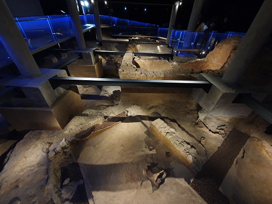
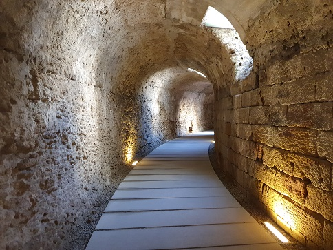

|
Cádiz .... Antiguo asentamiento
fenicio, Gadir. El pueblo Cananeo, los Fenicios, del griego, por el tinte de las
telas purpuras, "Propio de los fenicios". Frente a la costa, en la Isla de Sancti Petri, se conservan restos fenicios y romanos del Templo de Hércules. Restos Romanos: Teatro, Acueducto, Ánforas romanas, Tumba Cista y la Fábrica de Salazones y La Casa del Obispo. También existió un anfiteatro visible hasta el siglo XVII, que fue expoliado. YACIMIENTO DE GADIR
Cádiz, posiblemente la ciudad mas
antigua de occidente, unos 3000 años de antigüedad. El Cádiz fenicio, Gadir,
"recinto cerrado". Sus restos se localizan bajo el Teatro del Títere
"La Tía Norica". Destacamos el trazado de calles, viviendas y utensilios
correspondientes al siglo IX a.e.c. Se conservan ocho viviendas distribuidas en
dos terrazas y organizadas en torno a dos calles pavimentadas. Estas
construcciones fueron realizadas principalmente con barro y arcilla. Como
curiosidad se pueden ver las huellas fosilizadas de varios bóvidos, que
recorrieron estas calles, y el esqueleto de un gato.

TEATRO Se encuentra en el barrio del Pópulo, entre la Catedral Vieja y el Arco de Blanco, bajo construcciones medievales y modernas, lo que dificulta su excavación. Descubierto en 1980 es considerado uno de los mayores edificios de este tipo en España. Es de finales del siglo I a.e.c., y fue mandado construir por Balbo. Las excavaciones realizadas en él muestran que sufrió una fuerte remodelación en época de Augusto. Las excavaciones realizadas hasta ahora permiten conocer el diámetro aproximado de la cávea o graderío. Otro sector excavado es un amplio tramo de la galería de circulación de espectadores para acceder a la zona media del graderío. El graderío aparece dividido en tres sectores, los dos inferiores apoyados sobre galerías abovedadas, se encuentran en muy buen estado de conservación. La cavea superior podría estar construida sobre una armazón de vigas de madera y estaría cubierta con un velarium, toldo apoyado en postes de madera, cuyos fosos aparecen en las gradas. Ver: Video

Ver Teatros romanos
ACUEDUCTO
********** En agosto de 2017 se ha descubierto en Cádiz el mayor puerto púnico del Mediterráneo. Miembros de la Universidad de Cádiz han escaneado con un georradar el terreno sobre el antiguo puerto fenicio, en el poblado de Doña Blanca. En abril de 2018, una intervención arqueológica confirmó que las galerías que se extienden bajo el barrio del Pópulo forman parte de las antiguas cloacas de Gades. En enero de 2020, Aparecen restos de tumbas en las obras del antiguo Garaje “América” de Cádiz. Las obras que se están llevando en el terreno han permitido hallar tres inhumaciones púnicas y una cremación de la época romana. En abril de 2020, descubren los restos de un puerto fenicio y romano en Cádiz. El hallazgo se ha realizado en el edificio Valcárcel, el acceso al puerto contaba con 200 metros de ancho dirección oeste. La profundidad del agua en la zona era de 20 metros. En agosto de 2021, abre sus puertas al público.
En abril de 2022, al construir un edificio, aparecen restos de un edificación con varias estancias y un columbario de época romana en el chalé la Porteña de Bahía Blanca. En noviembre de 2023, en un solar de la calle Huerta del Obispo, han aparecido varias tumbas púnicas en fosas y fosas romanas de incineración en las que pueden verse restos humanos, a lo que se suma un conjunto de urnas también de incineración y restos de vasijas romanas. Junto a este conjunto ha sido excavado un pozo romano. En abril de 2024se hallan 21 enterramientos romanos en el solar de la calle Marqués de Cropani.
|
||||||